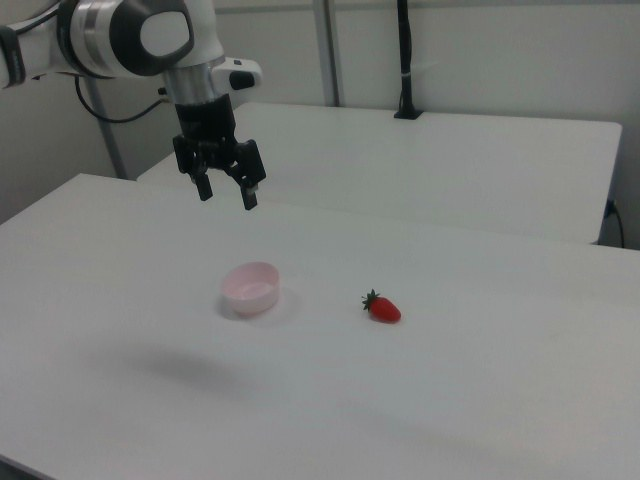

RoboMIND · franka_3rgb__pick_up_strawberry_in_bowl/1017_102324
Pick up strawberry in bowl

Visual review action_review.json
{
"prompt_protocol": "concise_action_v1",
"prompt_provenance": "visually_authored_from_video_and_initial_frame",
"dataset": "x-humanoid-robomind/RoboMIND",
"task": "pick_up_strawberry_in_bowl",
"episode_id": "1017_102324",
"source_video": "../../original/data/trajectory.hdf5",
"generation_camera": "camera_right",
"source_frame_count": 134,
"source_resolution": [
640,
480
],
"source_fps": null,
"source_fps_note": "FPS is not recorded in the source HDF5; 30 FPS is only a nominal playback rate, so no real-time durations are claimed.",
"selected_source_frame_start": 0,
"selected_source_frame_end_exclusive": 134,
"selected_frame_count": 134,
"selection_reason": "The episode is one continuous pick-and-place task (grasp strawberry, carry to bowl, release, withdraw) with no independent subtasks, so the complete sequence is retained and no shortened branch or separate full-sequence prompt is made.",
"usable_prompt": "The robotic arm grasps the red strawberry from the table, carries it over the pink bowl, and releases it into the bowl, then lifts clear. Keep the camera fixed; preserve robot geometry, physically valid joint motion, and normal gripper opening and closing.",
"full_sequence_prompt": "The robotic arm grasps the red strawberry from the table, carries it over the pink bowl, and releases it into the bowl, then lifts clear. Keep the camera fixed; preserve robot geometry, physically valid joint motion, and normal gripper opening and closing.",
"selected_action_outcome": {
"status": "visually_completed",
"description": "The gripper closes on the strawberry on the table (about frames 30-62), lifts it (about 90-96), carries it left to above the pink bowl (about 96-104), lowers it into the bowl and opens (about 106-124), and the arm rises clear (about 120-133). The red strawberry is visible resting in the bowl at the last frame."
},
"source_overall_outcome": {
"status": "visually_completed",
"source_quality_label": null,
"description": "Same as the selected action: strawberry ends inside the pink bowl, arm raised back near its starting pose, gripper open."
},
"anatomical_side_evidence": {
"visible_description": "Single Franka Emika Panda arm with a parallel-jaw gripper; base off-frame at image left, the arm enters from the left edge in the camera_right view. Only one arm exists.",
"source_annotation": "original/task_prompt.txt and language_raw: 'pick up strawberry in bowl'.",
"visual_certainty": "Not a humanoid; left/right anatomy not needed. The prompt refers to the single visible robotic arm."
},
"arm_roles": {
"active_visible_arm": "Single arm grasps the strawberry, carries it to the bowl, releases it, and withdraws upward.",
"other_arm": "None."
},
"coordination": "Single arm acts alone; no second arm, hand transfer or human interaction.",
"chronology": [
{
"source_frames_inclusive": [
0,
18
],
"observation": "Arm held above the table at image left with gripper open and pointing down; pink bowl at image left of centre and red strawberry to its right, both on the white table."
},
{
"source_frames_inclusive": [
20,
32
],
"observation": "Arm swings forward/right and lowers the open gripper onto the strawberry (blue wrist light visible)."
},
{
"source_frames_inclusive": [
34,
62
],
"observation": "Gripper closes around the strawberry on the table (telemetry gripper value rises from about 0.02 at frame 30 to about 0.2 at frame 60); the strawberry stays on the table."
},
{
"source_frames_inclusive": [
64,
90
],
"observation": "Gripper holds the strawberry at the table with small adjustments; gripper value reaches about 0.55 by frame 84."
},
{
"source_frames_inclusive": [
92,
104
],
"observation": "Strawberry lifted off the table and carried left and slightly toward the bowl, positioned above the bowl rim by about frame 100."
},
{
"source_frames_inclusive": [
106,
124
],
"observation": "Gripper lowers the strawberry into the bowl and opens (gripper value falls from about 0.5 at frame 108 to 0.13 at frame 120 and 0 by 126); strawberry rests in the bowl."
},
{
"source_frames_inclusive": [
124,
133
],
"observation": "Arm rises and moves back up and to image left toward the start pose with the gripper open; strawberry remains in the pink bowl."
}
],
"uncertainties": [
"Whether the strawberry is lifted slightly before frame 92 is hard to judge at this resolution; frames 34-90 show the gripper at the strawberry with the berry still near the table, and the lift is clearest from frame 92.",
"The exact release frame inside the bowl (about 110-120) is inferred from the gripper telemetry and the opening fingers, partly occluded by the bowl rim.",
"FPS is not recorded in the source; frame indices are authoritative, not time.",
"Gripper telemetry polarity (higher value = more closed) was inferred from the video and used only as supporting evidence."
],
"source_annotation_discrepancies": [
"The publisher instruction 'pick up strawberry in bowl' is ambiguous; the video shows the strawberry being picked from the table and placed into the pink bowl, which the prompt reflects. No object colour or side discrepancies."
],
"inspection_coverage": {
"entire_sequence_reviewed": true,
"sampled_decoded_frame_indices": [
0,
2,
4,
6,
8,
10,
12,
14,
16,
18,
20,
22,
24,
26,
28,
30,
32,
34,
36,
38,
40,
42,
44,
46,
48,
50,
52,
54,
56,
58,
60,
62,
64,
66,
68,
70,
72,
74,
76,
78,
80,
82,
84,
86,
88,
90,
92,
94,
96,
98,
100,
102,
104,
106,
108,
110,
112,
114,
116,
118,
120,
122,
124,
126,
128,
130,
132
],
"sampling_method": "Every second decoded frame of camera_right (frames 0-132) in sequential temporary contact sheets, plus native-resolution frames 34, 62, 92, 106, 114 and the final frame 133.",
"native_resolution_frame_indices": [
34,
62,
92,
106,
114,
133
],
"conditioning_png_inspected_after_sequence": true,
"conditioning_png": "../first_frame.png",
"temporary_evidence_location": "/tmp/rm_review_franka_3rgb__pick_up_strawberry_in_bowl_1017_102324 (not a dataset artifact)",
"ancillary_camera_videos_used": false,
"telemetry_used": "puppet/joint_position gripper column (index 7) sampled every 6 frames as supporting evidence only."
},
"generation_reference_validation": {
"source_frame_start": 0,
"source_frame_end_exclusive": 134,
"frame_count": 134,
"lossless_source_frame_correspondence_passed": true,
"original_source_hdf5_retained_unchanged": true
}
}